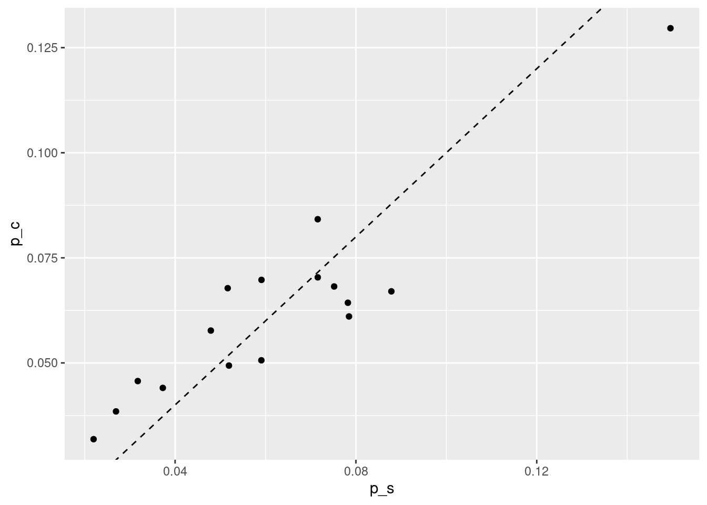
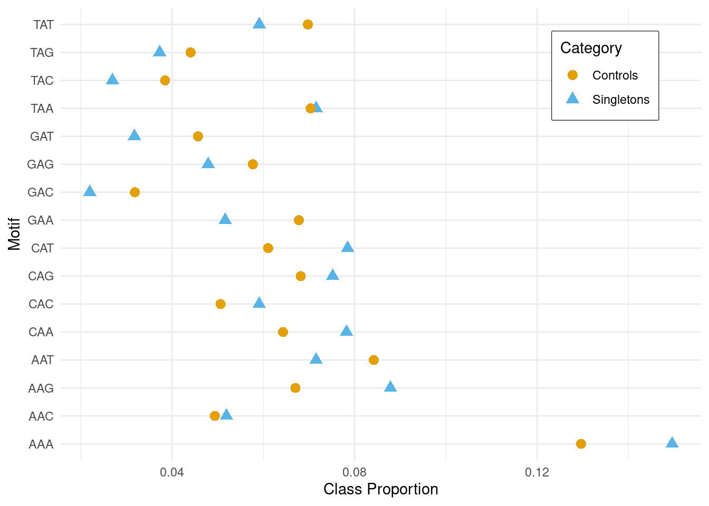
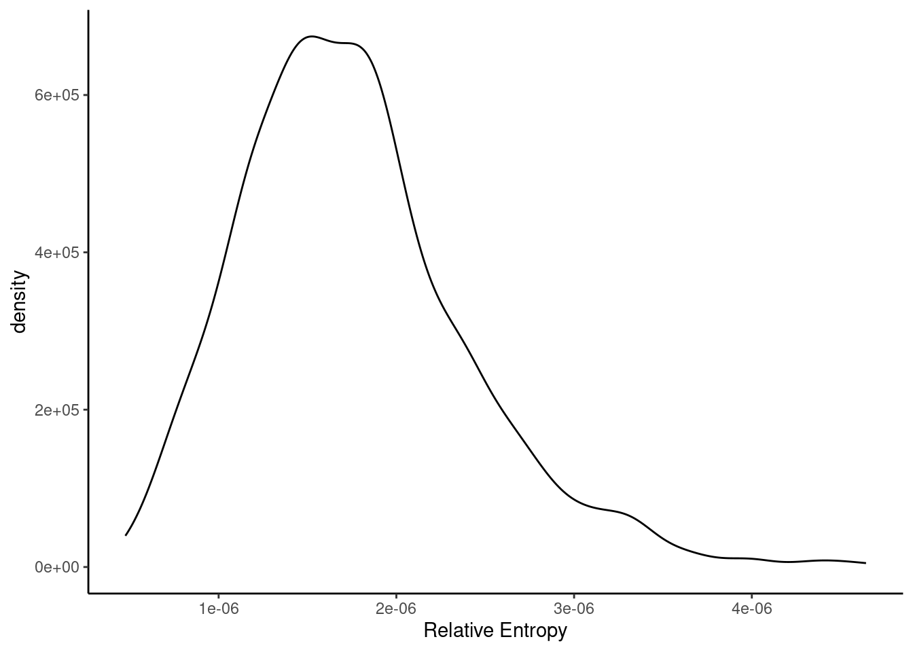

Last updated: 2025-03-04
Checks: 7 0
Knit directory: LSCI_pipeline/
This reproducible R Markdown analysis was created with workflowr (version 1.7.1). The Checks tab describes the reproducibility checks that were applied when the results were created. The Past versions tab lists the development history.
Great! Since the R Markdown file has been committed to the Git repository, you know the exact version of the code that produced these results.
Great job! The global environment was empty. Objects defined in the global environment can affect the analysis in your R Markdown file in unknown ways. For reproduciblity it’s best to always run the code in an empty environment.
The command set.seed(20240916) was run prior to running
the code in the R Markdown file. Setting a seed ensures that any results
that rely on randomness, e.g. subsampling or permutations, are
reproducible.
Great job! Recording the operating system, R version, and package versions is critical for reproducibility.
Nice! There were no cached chunks for this analysis, so you can be confident that you successfully produced the results during this run.
Great job! Using relative paths to the files within your workflowr project makes it easier to run your code on other machines.
Great! You are using Git for version control. Tracking code development and connecting the code version to the results is critical for reproducibility.
The results in this page were generated with repository version e174afe. See the Past versions tab to see a history of the changes made to the R Markdown and HTML files.
Note that you need to be careful to ensure that all relevant files for
the analysis have been committed to Git prior to generating the results
(you can use wflow_publish or
wflow_git_commit). workflowr only checks the R Markdown
file, but you know if there are other scripts or data files that it
depends on. Below is the status of the Git repository when the results
were generated:
Ignored files:
Ignored: .Rhistory
Ignored: .Rproj.user/
Ignored: data/1kgp/
Ignored: data/hgdp/
Ignored: data/reference/
Ignored: output/3mer_counts/
Ignored: output/controls/
Ignored: output/figs/
Ignored: output/single_pos/
Ignored: output/single_pos_cc/
Ignored: output/single_pos_pp/
Ignored: output/singletons/
Ignored: output/slurm/
Ignored: output/three_pos/
Ignored: output/two_pos/
Ignored: scratch/
Untracked files:
Untracked: analysis/tvd_other_metrics.Rmd
Unstaged changes:
Modified: analysis/pop_comparison.Rmd
Modified: analysis/single_position_results.Rmd
Modified: code/three_pos_stat.py
Note that any generated files, e.g. HTML, png, CSS, etc., are not included in this status report because it is ok for generated content to have uncommitted changes.
These are the previous versions of the repository in which changes were
made to the R Markdown (analysis/3mer_motifs.Rmd) and HTML
(docs/3mer_motifs.html) files. If you’ve configured a
remote Git repository (see ?wflow_git_remote), click on the
hyperlinks in the table below to view the files as they were in that
past version.
| File | Version | Author | Date | Message |
|---|---|---|---|---|
| Rmd | e174afe | Andy Beck | 2025-03-04 | wflow_publish("analysis/3mer_motifs.Rmd") |
library(tidyverse)
library(ggpubfigs)
library(reactable)base_dir <- "output"
motif_dir <- paste0(base_dir, "/3mer_counts")load_motif <- function(motif_dir, pop, subtype){
f_name <- paste0(motif_dir, "/", pop, "_", subtype, ".csv")
df <- read_csv(f_name, show_col_types = FALSE) %>%
mutate(p_s = singletons / sum(singletons),
p_c = controls / sum(controls))
return(df)
}Here we’ll generate functions for getting motifs for singletons and their matched controls on the fly. For most of the document we will rely on pre-generated results.
library(reticulate)
#conda_python("base", conda = "/net/snowwhite/home/beckandy/mambaforge/bin/mamba")
#conda_create("my_project_env", conda = "/net/snowwhite/home/beckandy/mambaforge/bin/mamba", python_version = 3.12)
#py_install(packages = c("pandas","ray"))
conda_python("my_project_env", conda = "/net/snowwhite/home/beckandy/mambaforge/bin/mamba")[1] "/net/snowwhite/home/beckandy/mambaforge/envs/my_project_env/bin/python"source_python("scratch/3mer_enrichment_R.py")
#get_motif_table("AT_CG", "ALL", "output", as.integer(-2:2))
motif_df <- function(subtype, population, rel_vals = c(-1:1)){
rel_vals <- sort(rel_vals)
df <- try(get_motif_table(subtype, population, "output", rel_vals = as.integer(rel_vals)))
if (inherits(df, 'try-error')){
py_eval('ray.shutdown()')
}
return(df)
}
ray_start <- function(){
py_eval('ray.init(num_cpus=22)')
}
ray_shutdown <- function(){
py_eval('ray.shutdown()')
}
ray_start()RayContext(dashboard_url='', python_version='3.10.15', ray_version='2.43.0', ray_commit='ecdcdc6a6e63dc4bcd6ea16aae256ce4d32a7e2c')#motif_df("AT_CG", "ALL", -1:1)
#motif_df("AT_CG", "AMR", rel_vals = c(-1,0,1))population <- "ALL"subtype <- "AT_CG"
df <- load_motif(motif_dir, population, subtype)
df %>%
reactable(pagination = F)Let’s assess how similar/dissimilar these distributions are between the singletons and their matched controls:
First: do the rankings of motifs match?
motif_rank_singletons <- df %>%
arrange(desc(p_s)) %>%
pull(motif)
motif_rank_controls <- df %>%
arrange(desc(p_c)) %>%
pull(motif)
motif_rank_singletons [1] "AAA" "AAG" "CAT" "CAA" "CAG" "TAA" "AAT" "TAT" "CAC" "AAC" "GAA" "GAG"
[13] "TAG" "GAT" "TAC" "GAC"motif_rank_controls [1] "AAA" "AAT" "TAA" "TAT" "CAG" "GAA" "AAG" "CAA" "CAT" "GAG" "CAC" "AAC"
[13] "GAT" "TAG" "TAC" "GAC"motif_rank_singletons == motif_rank_controls [1] TRUE FALSE FALSE FALSE TRUE FALSE FALSE FALSE FALSE FALSE FALSE FALSE
[13] FALSE FALSE TRUE TRUEThe answer is: no! Let’s visualize this in a scatterplot:
df %>%
ggplot(aes(x = p_s, y = p_c)) +
geom_point() +
geom_abline(slope = 1, intercept = 0, linetype = 2)
df %>%
select(motif, p_s, p_c) %>%
rename(Singletons = p_s, Controls = p_c) %>%
pivot_longer(-motif, names_to = "category", values_to = "proportion") %>%
ggplot(aes(x = proportion, y = motif, shape = category, color = category)) +
geom_point(size=3) +
xlab("Class Proportion") +
ylab("Motif") +
theme_minimal() +
scale_color_manual(values = ggpubfigs::friendly_pals$wong_eight) +
labs(color = "Category", shape = "Category") +
theme(legend.position = "inside", legend.position.inside = c(0.85,0.85),
legend.background = element_rect(color = "white", fill = "white"),
legend.box.background = element_rect(fill = alpha('#e5e5e5', .6), linewidth = 1, linetype = "solid", color = "#333333"))
Next, let’s look at a few metrics of density similarity/dissimilarity:
# compute relative entropy
re_val <- sum(df$p_s * log(df$p_s / df$p_c))
print(re_val)[1] 0.02060453Relative to the values we observe for, say, our single position models, the relative entropy we observe here is quite high; however, I’m still unsure how to really say anything about the strength of this difference between the distributions. One thought is how about we draw random re-samples of the singletons using their observed proportion and then get a “null distribution” of relative entropy values from these re-samples?
n_singletons <- df$singletons %>% sum()
s_1 <- rmultinom(1, n_singletons, df$p_s)
s_1 <- s_1 / sum(s_1)
sum(df$p_s * log(df$p_s / s_1))[1] 1.239007e-06Maybe this isn’t quite what I’m looking for; maybe we want to draw the same number of singletons, but from the proportions from the control distribution?
re_vals <- c()
for(i in 1:1000){
s_1 <- rmultinom(1, n_singletons, df$p_c)
s_1 <- s_1 / sum(s_1)
re_vals <- c(re_vals, sum(s_1 * log(s_1 / df$p_c)))
}
data.frame(re = re_vals) %>%
ggplot(aes(x = re)) +
geom_density() +
xlab("Relative Entropy") +
theme_classic()
Ok, so empirically, our relative entropy value of 0.0206045 is far larger than what we’d expect if our singletons were a random draw from a distribution with the same proportions as observed in our control sample. Great!
What might be more interesting to look at is the relative entropy statistics that we might have observed for motifs other than the central 3-mer. For example, what if we defined the motif by the nucleotides at the -2 and -1 positions? Do we see a larger relative entropy value for such a motif?
df2 <- motif_df("AT_CG", "ALL", -2:0)
df2 <- df2 %>%
mutate(p_s = singletons / sum(singletons),
p_c = controls / sum(controls))
sum(df2$p_s * log(df2$p_s / df2$p_c))[1] 0.01918039Here we observe a large re value relative to our “null” draws from above, and it’s close to what we observed for the -1,1 motif
Based on the above, we might instead ask what our results look like if we define motifs based on the nucleotides at the 1 and 2 relative positions:
df2 <- motif_df("AT_CG", "ALL", 0:2) %>%
mutate(p_s = singletons / sum(singletons),
p_c = controls / sum(controls))
sum(df2$p_s * log(df2$p_s / df2$p_c))[1] 0.01318622Still weaker than the (-1, 1) relative entropy, but still in the same ballpark. But what if we instead went by chosing the two positions with the highest individual position effects (-1, -3):
df2 <- motif_df("AT_CG", "ALL", c(-3,-1,0)) %>%
mutate(p_s = singletons / sum(singletons),
p_c = controls / sum(controls))
sum(df2$p_s * log(df2$p_s / df2$p_c))[1] 0.02318465Well ok, here we’ve found a higher relative entropy value than what we observed at (-1, 1)! Now, I suspect that we’ll also see an increased relative entropy as we include more positions in the motifs; let’s look now at the central +/-2 bp window and the non-central window (-3,-2,-1,1):
df2 <- motif_df("AT_CG", "ALL", -2:2) %>%
mutate(p_s = singletons / sum(singletons),
p_c = controls / sum(controls))
df3 <- motif_df("AT_CG", "ALL", -3:1) %>%
mutate(p_s = singletons / sum(singletons),
p_c = controls / sum(controls))
sum(df2$p_s * log(df2$p_s / df2$p_c))[1] 0.04875853sum(df3$p_s * log(df3$p_s / df3$p_c))[1] 0.04789032As we expected, we see higher relative entropy statistics as we increase the motif size. Here we observe a slightly higher value for the central (-2 to 2) motif; this motif overlaps with the strongest single position effect (-1), the third strongest single position effect (+2), and the strongest two-way effect (+1, +2). The non-central motif is missing the (+1, +2) and +2 positions, but adds in the second strongest single position effect (-3).
ray_shutdown()NULL
sessionInfo()R version 4.4.3 (2025-02-28)
Platform: x86_64-pc-linux-gnu
Running under: Ubuntu 20.04.6 LTS
Matrix products: default
BLAS: /usr/lib/x86_64-linux-gnu/openblas-pthread/libblas.so.3
LAPACK: /usr/lib/x86_64-linux-gnu/openblas-pthread/liblapack.so.3; LAPACK version 3.9.0
locale:
[1] LC_CTYPE=en_US.UTF-8 LC_NUMERIC=C
[3] LC_TIME=en_US.UTF-8 LC_COLLATE=en_US.UTF-8
[5] LC_MONETARY=en_US.UTF-8 LC_MESSAGES=en_US.UTF-8
[7] LC_PAPER=en_US.UTF-8 LC_NAME=C
[9] LC_ADDRESS=C LC_TELEPHONE=C
[11] LC_MEASUREMENT=en_US.UTF-8 LC_IDENTIFICATION=C
time zone: America/New_York
tzcode source: system (glibc)
attached base packages:
[1] stats graphics grDevices utils datasets methods base
other attached packages:
[1] reticulate_1.41.0 reactable_0.4.4 ggpubfigs_0.0.1 lubridate_1.9.3
[5] forcats_1.0.0 stringr_1.5.1 dplyr_1.1.4 purrr_1.0.2
[9] readr_2.1.5 tidyr_1.3.1 tibble_3.2.1 ggplot2_3.5.1
[13] tidyverse_2.0.0 workflowr_1.7.1
loaded via a namespace (and not attached):
[1] gtable_0.3.6 xfun_0.49 bslib_0.8.0 htmlwidgets_1.6.4
[5] processx_3.8.4 lattice_0.22-6 callr_3.7.6 tzdb_0.4.0
[9] crosstalk_1.2.1 vctrs_0.6.5 tools_4.4.3 ps_1.8.1
[13] generics_0.1.3 parallel_4.4.3 fansi_1.0.6 pkgconfig_2.0.3
[17] Matrix_1.7-1 lifecycle_1.0.4 farver_2.1.2 compiler_4.4.3
[21] git2r_0.33.0 munsell_0.5.1 getPass_0.2-4 httpuv_1.6.15
[25] htmltools_0.5.8.1 sass_0.4.9 yaml_2.3.10 crayon_1.5.3
[29] later_1.3.2 pillar_1.9.0 jquerylib_0.1.4 whisker_0.4.1
[33] cachem_1.1.0 tidyselect_1.2.1 digest_0.6.37 stringi_1.8.4
[37] labeling_0.4.3 rprojroot_2.0.4 fastmap_1.2.0 grid_4.4.3
[41] archive_1.1.8 colorspace_2.1-1 cli_3.6.3 magrittr_2.0.3
[45] utf8_1.2.4 reactR_0.6.1 withr_3.0.2 scales_1.3.0
[49] promises_1.3.0 bit64_4.6.0-1 timechange_0.3.0 rmarkdown_2.29
[53] httr_1.4.7 bit_4.5.0.1 png_0.1-8 hms_1.1.3
[57] evaluate_1.0.1 knitr_1.49 rlang_1.1.4 Rcpp_1.0.13-1
[61] glue_1.8.0 rstudioapi_0.17.1 vroom_1.6.5 jsonlite_1.8.9
[65] R6_2.5.1 fs_1.6.5